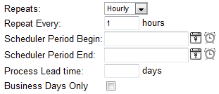
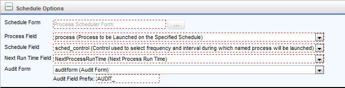

Architecture
 Use of the Scheduler module has largely been deprecated in the product. BP Logix recommends using the Goal object for most scheduled operations that were formerly implemented via the Scheduler Module.
Use of the Scheduler module has largely been deprecated in the product. BP Logix recommends using the Goal object for most scheduled operations that were formerly implemented via the Scheduler Module.
The PDSM consists of the following major components:
- Schedule picker control
- Schedule Process custom task
- Various Knowledge Views
These components work together to create an environment in which not only is the specified process run at the correct times, but all the information surrounding past, current, and planned process launches are made available to the user.
Let’s review each component:
Schedule picker control
The schedule picker control is a typical form control, accessed via the Form builder or Microsoft Visual Studio.

- Repeats: Choices are hourly, daily, monthly, or yearly.
- Repeat Every: Specify the frequency with which the process will be launched.
- Starts On: (Optional) The specified process will not be launched before this date/time.
- Ends On: (Optional) The specified process will not be launched after this date/time.
-
Lead Time: (Optional) Tells the scheduler to launch the process a certain number of days prior to “Starts On” (effectively moves “Starts On” date up the indicated number of days).
- Business Days Only: When checked, only launch the process on business days.
Schedule Process Custom Task
The schedule process custom task is used within a workflow or timeline definition to:
- Review existing schedule form instances
- Determine if any process needs to be launched
- Launch the appropriate process(es)
As you will see, this custom task requires that the form used to schedule the process launch contain not only a schedule picker control, but a number of other controls as well that also provide important information for the PDSM. Each control is named with an ID, as is typical for all form controls; these IDs are provided to the custom task to enable it to pull the appropriate information from the form and behave accordingly.

- Schedule Form: Form definition of the form containing the schedule picker control and the other important data specified in this custom task.
- Process Field: The form field on the scheduler form that contains the ID of the content picker control pointing to the process to be launched.
- Schedule Field: The form field on the scheduler form that contains the ID of the schedule picker control.
- Next Run Time Field: The form field on the scheduler form that contains the ID of the date/time picker control used by the custom task to automatically calculate and store the next scheduled run time for the process.
- Audit Form: (Optional) The form field on the scheduler form that contains the ID of the content picker control pointing to the form definition of the audit form. The audit form is described in more detail below.
- Audit Field Prefix: This value is prepended to the name of each control on the schedule form to create the matching control on the audit form.
Knowledge Views
Certain knowledge views are used by the PDSM to identify and display processes it has launched, or are scheduled to be launched.
- All Processes Run for this Schedule: This knowledge view is shown on the schedule form instance. It displays all process instances that were launched as a result of that schedule form instance. This is used by the Form and will not be launched by a user.
- All Scheduled Items: Displays a list of all schedule form instances.
- Upcoming Scheduled Items: Displays a list of all schedule form instances whose Next Run Time Field falls within a specified number of days from now.